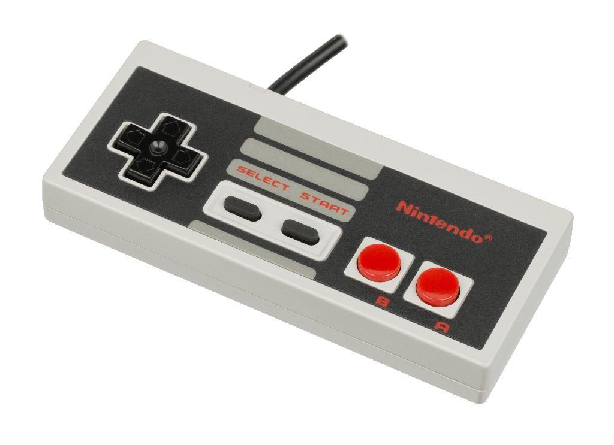
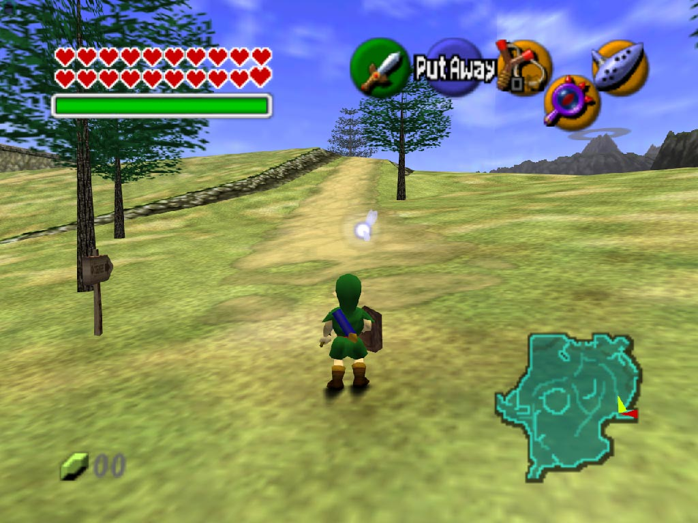
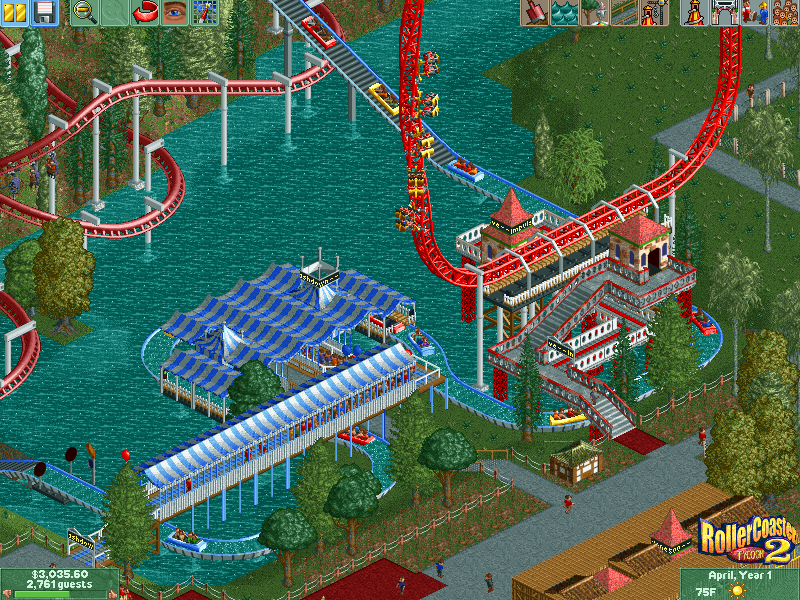

The principal element that separates games from other mediums is the use of interaction.
Interaction is created with input/output systems or a cycles between the player and machine of feedback and response.
The system of interaction in a game generally should:
- Encourage exploration and understanding of the interface
- Encourage discovery and exploration within the game world
- Allow the use to master the tools of the game
Input
- Keyboard & mouse
- Gamepad (joystick + buttons)
- Voice or sound
- 3d sensing - Kinect, Wii
- Arcade guns (light sensing)
- Other haptic sensors
Output
Positive feedback
The rules governing feedback are subjective. Some players prefer very difficult games, while others prefer simple games with nice graphics. The idea of positive feedback is less subjective. All games require the player to understand how the game is meant to be interacted with.
- The rules of the game are easy to learn (not necessarily easy to master)
- The user is in direct control of the avatar
- Improvemnt of skill through gameplay
- Immediate feedback
- Sufficient feedback
- Recovery from mistakes
Avatar interaction model

Player interacts through an avatar within the game. Player is closely associated with the experience of the avatar, running, jumping, exploring and dying in the game world.
Omnicient interaction

The player has control over a group of characters that interact with the world of the game. These are typical in the simulation and strategy genre of games.
Game mechanics
Game mechanics are the system of rules that governs the way a user interacts with a game.
- The interface allows the user to make actions
- The game records the action and makes decisions based on the input and environment
- Feedback in the form of changing game states is given to the user
- The user interprets the feedback and adjusts and continues actions
Game mechanics build up within in a game to create a complex world.
Bad mechanics
- Player waiting through material that isn't useful
- Player makes mistakes without adequate feedback
- Game has no instructions or help for player
- Mastery doesn't change the difficulty or reward system of the game
Undesirable effects
Gameplay that falls outside of positive feedback can lead to undesirable effects. It can be difficult to judge each individual user's reaction to the simplicity or complexity of the game system or general interest.
- Fatique from lack of change or useless repetition
- Feeling that nothing will be accomplished from mastery
- The reward for mastery is greater than the degree of accomplishment
- Mastery of unnecessary or unrelated tools
Goals, obstacles and rewards
Most games have established goals, whether they're specific, like saving the princess, or vague, like exploring an abandoned island. Games use obstacles and rewards to lead the player toward goals and provide challenges to reaching those goals. The line between goal, obstacle and reward can often be blurred.
- Goals can be objectives for the player to progress through a game or win the game. Many games have one main goal and several side goals.
- Challenges are puzzles, enemies or other obstacles that prevent the player from achieving goals. Sometimes challenges help lead player towards the goals.
- Rewards can take the form of currency, objects, visual rewards or other items given to the player for completing challenges or defeating obstacles